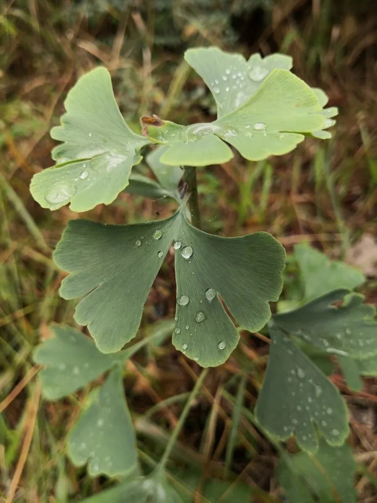

乔木 · 植物界
银杏 Ginkgo biloba

现存最古老的裸子植物之一，扇形叶片入秋金黄，种子俗称白果，可食可药，被誉为植物界的“活化石”。
- 分类
- 门裸子植物门纲银杏纲目银杏目科银杏科属银杏属
- 栖息环境
- 海拔 500–1000 米的亚热带山地，多生于温暖湿润的山坡与沟谷林中
- 地理分布
- 中国浙江、安徽、湖北等地有零星野生种群；全国及世界各地广泛栽培
- 保护级别
- IUCN 濒危（EN）；中国国家一级保护野生植物
物种志
银杏为落叶大乔木，高可达 40 m，树干通直，树皮灰褐色并纵裂，老树枝条分为长枝与短枝两种。叶片呈折扇状，具二叉状叶脉，是裸子植物中罕见的宽阔叶形；入秋叶色转为金黄，观赏价值极高。雌雄异株，雄球花呈葇荑状下垂，雌球花具长柄，种子成熟时外种皮橙黄肉质并散发异味，内种皮洁白坚硬。
银杏原产中国，野生种群仅零星分布于浙江天目山、湖北大洪山等地，但作为行道树与园林树遍植南北各地，耐寒、耐旱、抗烟尘，寿命可达千年以上。木材纹理细密，可供雕刻与制作家具；种仁即白果，可煮食或入药，但含微量银杏毒素，须熟食且不宜过量；叶片提取物也被用于制药。银杏生长缓慢，俗称“公孙树”，意即公公栽树、孙辈才能收果；许多寺庙与古村落至今仍保存着树龄数百年乃至上千年的银杏古树。
形态与习性
- 株高可达 40 m，胸径可达 1.5 m
- 花期3–4 月，与叶同放
- 种子成熟9–10 月，外种皮橙黄色
- 光照喜光，幼树稍耐阴
- 水分耐旱，怕积水，适宜年降水量 600–1200 mm
- 土壤深厚肥沃、排水良好的沙壤土，pH 6–7.5
- 主要用途行道绿化、木材雕刻、白果食用与叶提取制药
趣味知识
- 银杏是现存最古老的种子植物之一，化石记录可追溯到约 2 亿年前，与恐龙同时代。
- 银杏的“果实”其实是种子，外种皮含银杏酸，接触后可能引起皮肤过敏。
- 银杏雌雄异株，只有雌株才会结出白果，雄株只开花不结实。
- 银杏叶片具有罕见的二叉状叶脉，是研究植物演化的重要活材料。